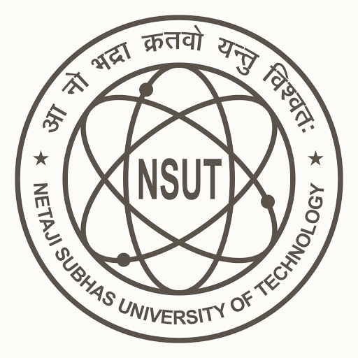

Resume

Lisha Angral
Roll no.: 2023UIT3018
B. Tech.
IT
Netaji Subhas University of Technology, Delhi
+91 99XXXXXX74
lishaangral@gmail.com
lisha.angral.ug23@nsut.ac.in
Lisha Angral
Lisha Angral
EDUCATION
- Netaji Subhas University of Technology, Delhi
- Bachelor of Technology, Information Technology
- 2023-Present
- CGPA: 8.45
- Doon International School Riverside Campus
- 12th grade, (CBSE, Science stream)
- 2020-2022
- Percenrage: 93.2%
- Doon International School Riverside Campus
- 10th grade (CBSE)
- 2018-2020
- Percentage: 96.3%
EXPERIENCE
- Heading of Internship
- Timeline
- Sub-Heading as in Position of Internship
- Tools & technologies used: Bleh
- Short description of work done
PERSONAL PROJECTS
- Heading of Project
- Timeline
- Sub-Heading of Project
- Tools & technologies used: Bleh
- Short description
- Heading of Project
- Timeline
- Sub-Heading of Project
- Tools & technologies used: Bleh
- Short description
TECHNICAL SKILLS AND INTERESTS
Languages: C++, Python, HTML
Frameworks: Bleh, Bleh, Bleh
Databases: Bleh, Bleh, Bleh. Bleh
Design Tools: Bleh
Soft Skills: Communication, Team Work, Public Speaking, Languages: English, Hindi, Dogri, Braille (UEB) & French (Basic proficiency)
Coursework: Data Structures and Algorithms
Areas of Interest: Web Development, Game Development & CyberSecurity
POSITIONS OF RESPONSIBILITY
- Something that will happen
- Class Representative, IT-1, NSUT Delhi
- Head Girl, Doon International School Riverside Campus
ACHIEVEMENTS AND CERTIFICATIONS
- LeetCode Profile Rating: Bleh
- Any Noteworthy Course
- Any good Hackathon Achievement
- Any Co-curricular Achievement
- Student of the Year Awardee at DIS Riverside